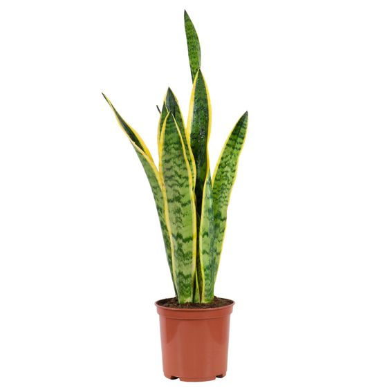

Espada de São Jorge
A Espada de São Jorge (Sansevieria trifasciata), também conhecida como "língua de sogra", é uma planta suculenta muito resistente, famosa por suas longas folhas verticais e rígidas que se assemelham a espadas. As folhas são verdes-escuro com listras horizontais mais claras, e algumas variedades possuem bordas amareladas. Sua aparência elegante e minimalista faz dela uma das plantas de interior mais populares.
Originária da África Ocidental, a Espada de São Jorge é extremamente adaptável, podendo crescer em diversas condições de luz, desde luz solar direta até ambientes com pouca iluminação. Além disso, requer pouca água, pois armazena umidade em suas folhas espessas, sendo ideal para quem procura uma planta de baixa manutenção.
Além de seu valor ornamental, a Espada de São Jorge é conhecida por suas propriedades purificadoras do ar, sendo capaz de remover toxinas como formaldeído e benzeno do ambiente. Na cultura popular, ela é associada à proteção e é frequentemente usada como símbolo de boa sorte e defesa contra energias negativas.